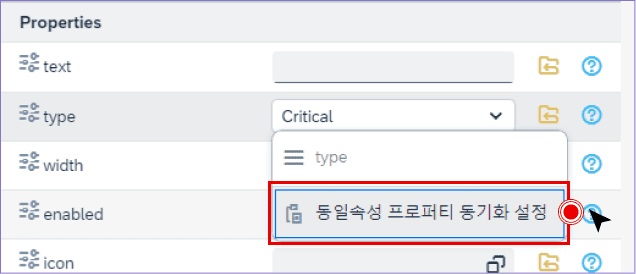
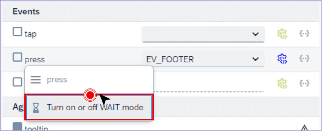
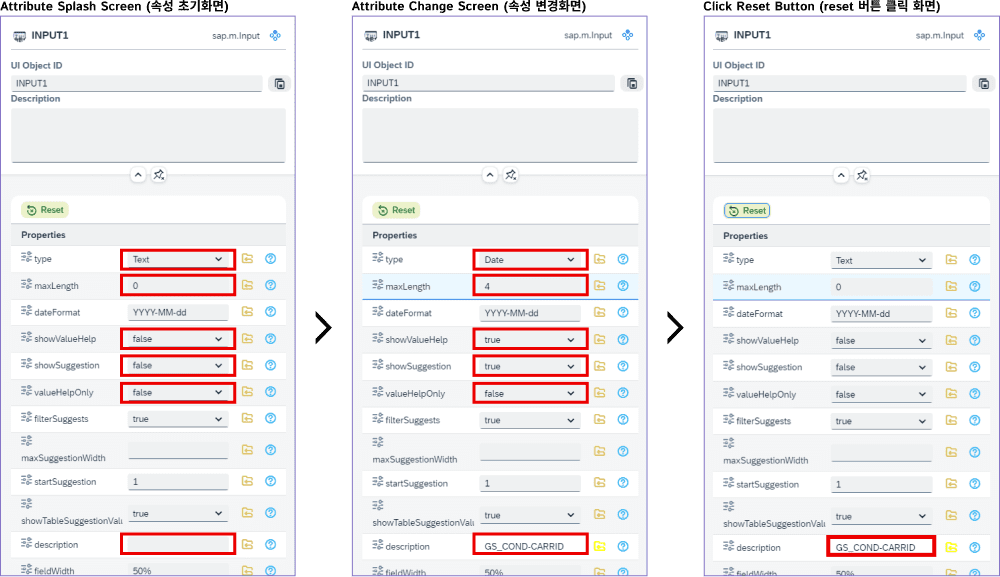
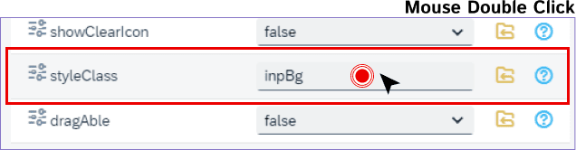
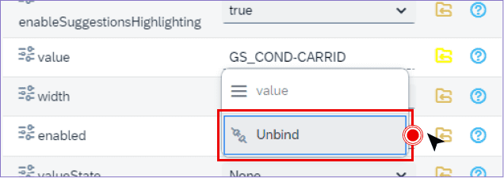
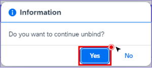
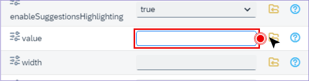
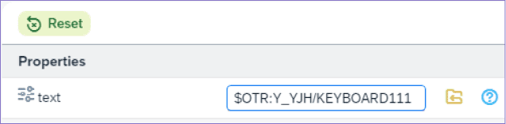
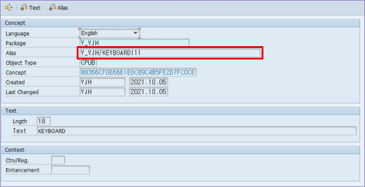
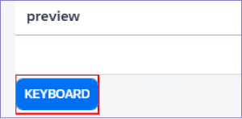

Binding PopUp
우측 상단의 Binding Popup 버튼을 통해 쉽게 바인딩 할 수 있다.
1. Binding Popup 버튼 클릭.

2. 바인딩 리스트 팝업을 불러온다.

3. 바인딩 리스트를 Drag하여 Property나 Aggregation에 Drop시 바인딩 할 수 있다.
Ctrl + ↑ or ↓
'focus' 되어있는 입력 필드에서 간단하게 다음 필드로 'focus'가 이동한다.
1. 입력 필드가 'focus'되어있는 상태에서 Ctrl을 누른상태로 상,하 방향키를 누른다.
동일속성 프로퍼티 동기화 설정
n개의 UI의 동일속성 프로퍼티를 간단하게 변경할 수 있다.
1. 변경하고자 하는 프로퍼티의 입력 필드에 마우스 우 클릭 후 동일속성 프로퍼티 동기화 설정 클릭.

2. 속성 변경 팝업이 보여진다.

- ① 변경할 값 선택
- ② 변경할 UI 체크(전체 또는 일부)
- ③ Confirm(확인)버튼 클릭
3. 미리보기 영역에 변경된 프로퍼티 적용.
(버튼의 타입 속성이 변경된 것을 확인)
(버튼의 타입 속성이 변경된 것을 확인)

이벤트 발생 시 Wating on or off
사용자에 따라 이벤트의 waiting을 on 또는 off로 변경 할 수 있다.
(기본 세팅 on)
(기본 세팅 on)
1. waiting을 off로 변경 할 이벤트 명에 마우스 우 클릭 후 'Turn on or off WAIT mode' 클릭.

2. 변경 된 이벤트 명의 좌측 체크박스 변경 확인.

3. waiting을 on로 변경 할 이벤트 명에 동일하게 실행 후 변경 확인.

프로퍼티 초기화
변경 한 프로퍼티 값을 초기화 하고 싶은 경우 Reset 버튼을 통해 초기화 할 수 있다.
(입력 필드에 바인딩 된 값은 초기화 버튼을 클릭해도 삭제되지 않는다.)
(입력 필드에 바인딩 된 값은 초기화 버튼을 클릭해도 삭제되지 않는다.)
1. 프로퍼티 최초 화면 > 프로퍼티 변경 화면 > Reset버튼 클릭 후 초기화 화면.

서버 이벤트 네비게이션
서버 이벤트 더블클릭 시 SAP GUI가 실행 되면서 해당 화면으로 네비게이션 한다.
1. 생성된 서버 이벤트를 더블클릭.

2. 해당 SAP GUI화면 실행.
CSS 편집기 호출
상단 bar의 Edit버튼이 아닌 프로퍼티의 StyleClass 값을 더블클릭 해도 CSS 편집기가 호출 된다.
(단 바인딩이 아닌 직접 입력시에만)
(단 바인딩이 아닌 직접 입력시에만)
1. StyleClass 입력 필드 더블 클릭.

2. CSS 편집기 호출된다.

Unbinding
Context Menu의 Unbinding을 통해 간단하게 바인딩을 해제할 수 있다.
(UI의 하위요소들 중 Aggregation에 바인딩했던 'Table'로부터 파생된 바인딩 path를 다 풀어준다.)
(UI의 하위요소들 중 Aggregation에 바인딩했던 'Table'로부터 파생된 바인딩 path를 다 풀어준다.)
1. 바인딩 된 입력 필드에 마우스 우 클릭 후 Unbind 클릭.

2. 바인딩 해제 확인 팝업이 뜬다.

3. "Yes"버튼 클릭 시 바인딩 해제.

OTR(Online Text Repository)
1. 프로퍼티에 $OTR: + OTR alias 를 조합하여 사용할 수 있다.
(ex. $OTR: + Y_YJH/KEYBOARD111)
(ex. $OTR: + Y_YJH/KEYBOARD111)


2. 미리보기 영역에 텍스트만 적용된 것을 확인 할 수 있다.
